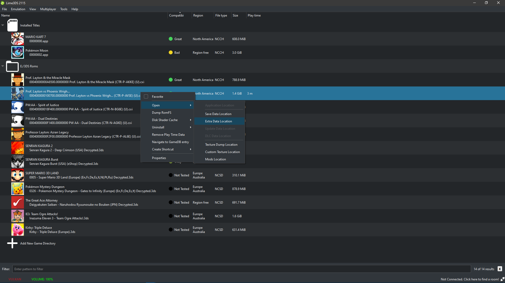
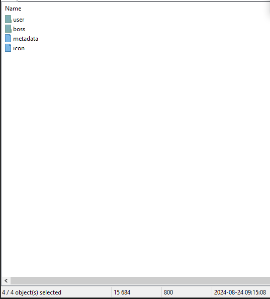
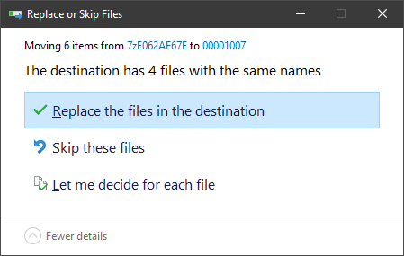
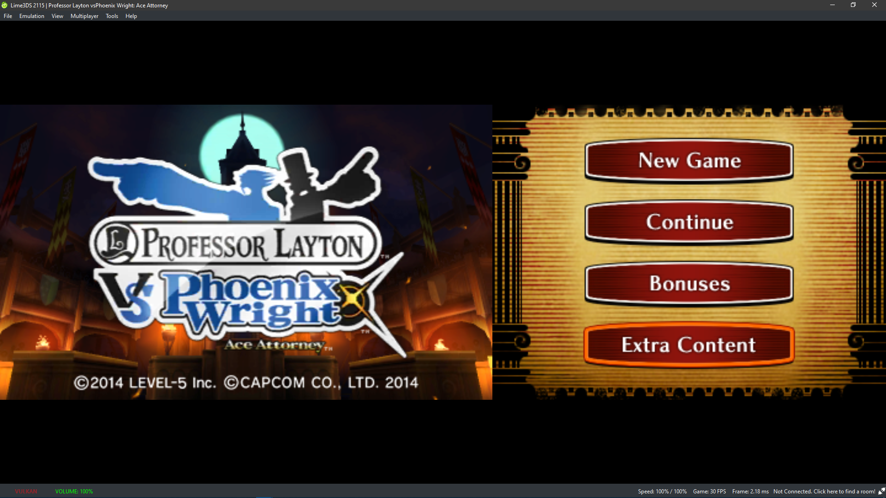
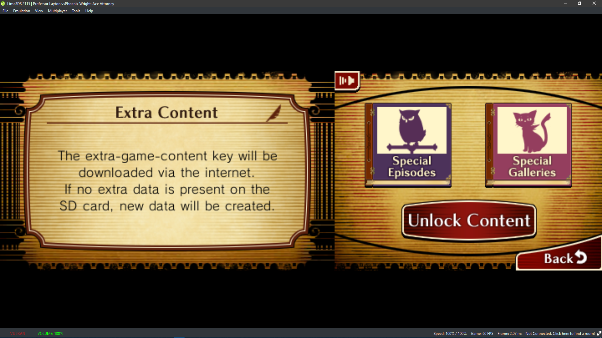

This is a guide for installing the Professor Layton vs. Phoenix Wright: Ace Attorney DLC. This works on the latest releases of Lime 3DS and PabloMK7/Citra forks.
These are my archives, made from a US Release of the game. I am not sure they will work for other regions, but given the 3DS's region locking, they most likely wont.
You can also extract your own data from your 3DS, using FBI and/or
checkpoint.
This GBATemp Discussion has info on how to get the spotpass data for a
file.
This is the Checkpoint github and has info for how to use it.
Launch your Citra fork - must be one of the newer releases - tested on lime3ds 2115 and PabloMK7/Citra release 518f723.
Open your extdata folder from the right click context menu of the game as shown.

If image isn't loading / for accessibility
Right click the game in the citra fork's home menu, and then select
Open. Then select Extra Data Location from the second menu that opens.
This should open the extdata folder in the file explorer.
If image isn't loading / for accessibility
This shows the contents of the citra extdata folder for the game.
Replace the contents of this folder with the contents of the
archive you downloaded.


If you manually extracted your spotpass and extdata, then the spotpass
archive's file (which for me has a name made of special characters,
and no extension) goes in If image isn't loading / for accessibility
Images showing the contents of the zip/7z files and that you should
choose replace files with the dialog prompt that shows up
For users with their own data
boss, and the
sd_vs1.bin file goes in the save folder.
Once the extdata is added, if you have a completed game save file, you should be able to access the extra content of the game. To do this from the home menu, select extra content, and if the loading does not crash, you should see the next menu for viewing either the special episodes or the special gallery.  
WIP
Enjoy :3